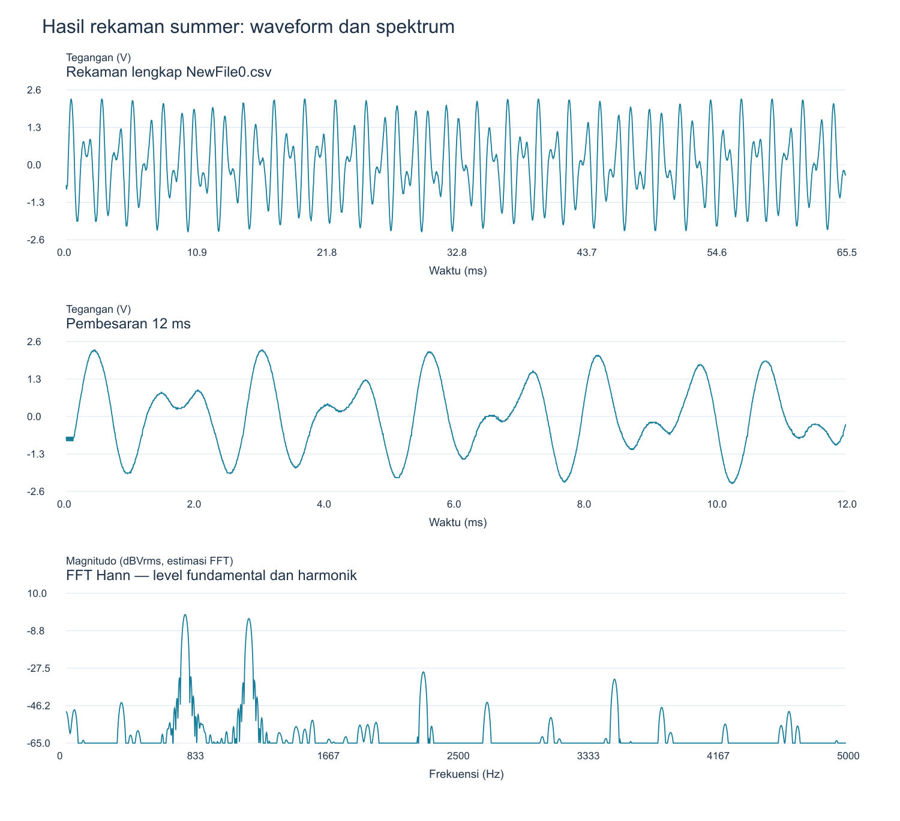

Analisis 29 Oktober 2026. Scope pada workbook: Rigol DS1052E. Multimeter: CD800a.
Hasil utama: pengguna melaporkan WAV pendek terdeteksi sebagai 4 pada threshold <0,01, tetapi tidak pada 0,1. Itu membuktikan deteksi pada pengaturan tersebut, belum membuktikan kesesuaian semua parameter DTMF. Jumlah percobaan dan nilai threshold tepat belum dicatat.
Ringkasan PNG · WAV yang diuji · Workbook asli · Hasil numerik lengkap
Workbook berisi osilator rendah 769.2 Hz / 5.76 Vpp, osilator tinggi 1190 Hz / 4.64 Vpp, dan output summer 4.68 Vpp / 1.19 Vrms. Tidak ada clipping menurut catatan pengguna. Pembanding simulasi summer 5,548 Vpp tidak menjadi batas kelulusan.
| Parameter | Nilai | Satuan |
|---|---|---|
| Error f rendah workbook | -0.10390 | % |
| Error f tinggi workbook | -1.57155 | % |
| Gain rendah FFT workbook | 0.57544 | V/V |
| Gain tinggi FFT workbook | 0.52481 | V/V |
| Twist FFT workbook | -3.20000 | dB |
| Gain dari R terukur rendah | 0.47417 | V/V |
| Gain dari R terukur tinggi | 0.47463 | V/V |
Gain di atas berasal dari cursor FFT workbook. Dari resistor summer terukur, prediksi ideal magnitudo gain sekitar 0.4742 dan 0.4746, sedangkan desain nominal 0,4545. Perbedaan dengan gain FFT belum dapat langsung dianggap kesalahan summer karena pembacaan cursor dan kondisi antar-rekaman perlu disamakan.
| Rekaman | Nada | Durasi (ms) | f fit (Hz) | Error (%) | Vpp rekaman (V) | Fundamental (Vrms) |
|---|---|---|---|---|---|---|
| NewFile0.csv | low | 65.53 | 763.63 | -0.83 | 4.64 | 0.929 |
| NewFile0.csv | high | 65.53 | 1172.12 | -3.05 | 4.64 | 0.734 |
| NewFile1.csv | low | 32.77 | 763.62 | -0.83 | 5.80 | 1.985 |
| NewFile2.csv | high | 65.53 | 1172.06 | -3.06 | 4.56 | 1.616 |
Frekuensi dihitung langsung dari sumbu waktu CSV dengan fitting sinus, bukan dari jarak cursor screenshot. Hasil CSV sekitar 763.6 dan 1172.1 Hz menjelaskan adanya perbedaan terhadap target 770 dan 1209 Hz. Angka workbook/screenshot dan CSV berasal dari rekaman berbeda; belum diketahui apakah pengaturan atau komponen berubah antar-pengambilan. Jangan mengganti angka workbook diam-diam dengan angka CSV.
Rasio fundamental hasil fit antar-CSV memberi magnitudo gain rendah 0.4678 dan tinggi 0.4544 V/V. Ini lebih dekat ke desain dibanding gain cursor workbook, tetapi berasal dari capture terpisah dan hanya bisa dibandingkan jika kondisi rangkaian/probe tidak berubah. Ini bukan alasan untuk langsung mengganti resistor summer berdasarkan cursor FFT saja.
WAV: 48 kHz, mono, PCM 16-bit; panjang file 0.465542 s. Rentang sinyal aktif 65.54 ms, sisanya silence. Peak PCM 0.800 full scale; twist hasil fit WAV -2.04 dB. WAV tidak memiliki satuan volt; pengukuran tegangan tetap mengacu CSV/scope.

Spektrum memakai Hann window; resolusi asli summer sekitar 15.26 Hz. Zero padding hanya memperhalus plot. THD pada CSV dihitung fit harmonik ke-2–10 dan disimpan dalam CSV hasil; residual juga mengandung noise, kuantisasi, dan ketidakcocokan model, sehingga bukan ukuran noise murni.
Kode publik website memakai Goertzel pada delapan frekuensi nominal DTMF. Setiap frame berisi 320 sampel; halaman meminta audio context 8 kHz, sehingga frame nominalnya 40 ms. Sinyal diberi exact Blackman window. Untuk masing-masing kandidat:
E(f) = power_Goertzel(f) / totalPower_windowed / jumlah_sampel
Decoder memilih kandidat terbesar di grup rendah dan tinggi yang melewati threshold. Jadi threshold adalah skor spektral relatif tanpa satuan, bukan volt, dBV, atau langsung amplitudo PCM. Mengalikan seluruh WAV dengan faktor k mengalikan pembilang dan penyebut dengan k²; skornya secara ideal tetap sama. Pernyataan lama bahwa threshold hanya menerima nada lebih lemah perlu diperbaiki menjadi: menerima skor relatif yang lebih kecil pada frekuensi nominal.
Detuning (frekuensi aktual bergeser), ketidakseimbangan kedua nada, durasi/posisi frame dan energi harmonik/noise dapat menurunkan skor kandidat. Dalam data ini nada tinggi WAV berbeda cukup jauh dari 1209 Hz, sehingga masuk akal skor bin 1209 lebih kecil. Ini penjelasan berbasis data dan algoritme, bukan bukti bahwa hanya satu faktor menjadi penyebab.
Kode ini tidak menambahkan pemeriksaan eksplisit batas error frekuensi, twist, atau persistensi multi-frame. Karena itu karakter 4 pada threshold kecil tidak berarti sinyal telah lolos pengujian penerima DTMF standar.
| Threshold | Decoded — replay lokal |
|---|---|
| 0.1 | (kosong) |
| 0.05 | (kosong) |
| 0.02 | (kosong) |
| 0.01 | 4 |
| 0.009 | 4 |
| 0.005 | 4 |
| 0.001 | 4 |
| 0.0001 | 4 |
Ini replay lokal, bukan pengujian ulang pada browser pengguna. WAV diresample offline ke 8 kHz memakai FIR; implementasi resampling WebAudio dapat menghasilkan sedikit perbedaan. Frame terbaik bersama (awal 0.240 s): E770 = 0.127134; E1209 = 0.019675. Threshold 0,1 harus dilampaui oleh kedua kandidat sekaligus. Uji pengali amplitudo 0,1× / 0,5× / 1× / 2× pada replay dicatat di JSON; penskalaan tanpa clipping tidak mengubah rasio energi.
| Komponen | Nominal | Terukur | Deviasi (%) | Toleransi tertulis (%) |
|---|---|---|---|---|
| 770 shunt R besar | 20000 | 19690 | -1.55 | 1 |
| 1209 seri R besar | 13000 | 12820 | -1.38 | 1 |
| 1209 shunt R besar | 13000 | 12800 | -1.54 | 1 |
| 770 Rg | 10000 | 9050 | -9.50 | 1 |
| 770 feedback tetap | 15000 | 14820 | -1.20 | 1 |
| 770 feedback dibatasi | 7500 | 7340 | -2.13 | 1 |
| 1209 Rg | 10000 | 9520 | -4.80 | 1 |
| Summer input rendah | 22000 | 20520 | -6.73 | 1 |
| Summer input tinggi | 22000 | 20500 | -6.82 | 1 |
| Summer feedback | 10000 | 9730 | -2.70 | 1 |
Data eksperimen disalin ke 01_Data_Asli. Pemetaan file: NewFile0.csv = summer; NewFile1.csv = osilator rendah; NewFile2.csv = osilator tinggi, sesuai workbook. Buka screenshot asli untuk memverifikasi cursor. Analisis tidak mengubah sumber.
Kode resmi aplikasi publik: halaman decoder, DTMFDecoder.js, Goertzel.js. Salinan di 05_Kode_Decoder_Publik. Dependensi dan metode ada pada 04_Skrip/analyze.py. Hash sumber dan hasil ada di manifest.json.